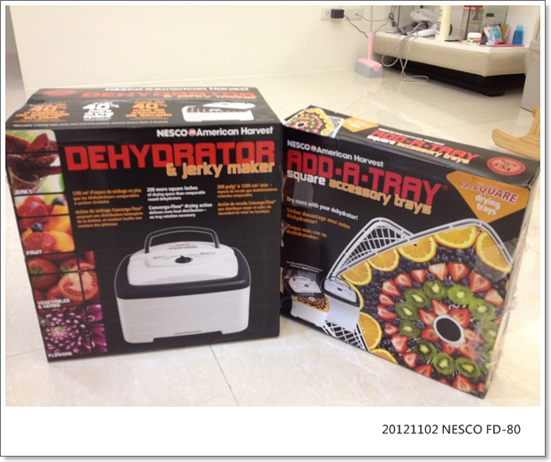
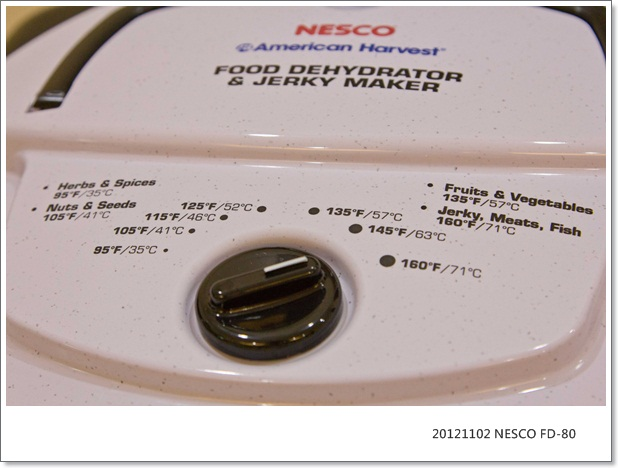
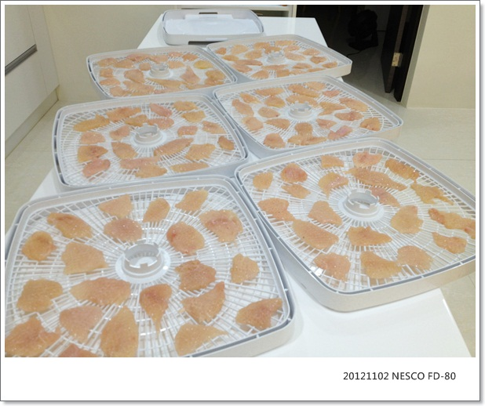
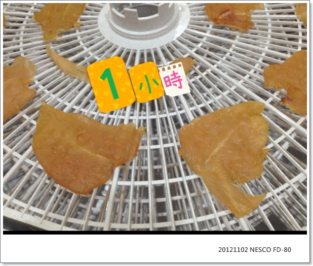
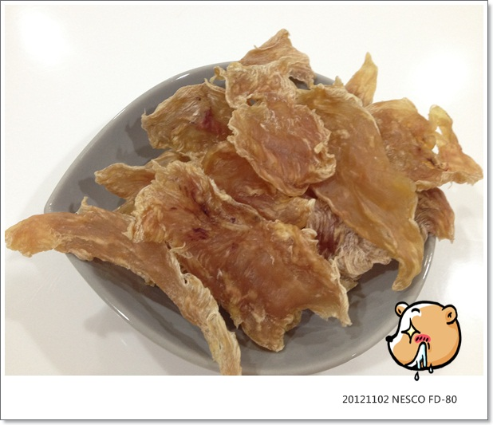
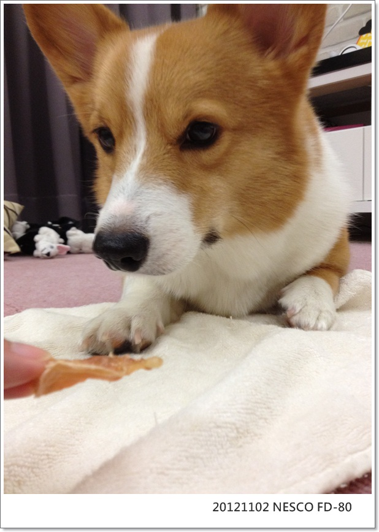
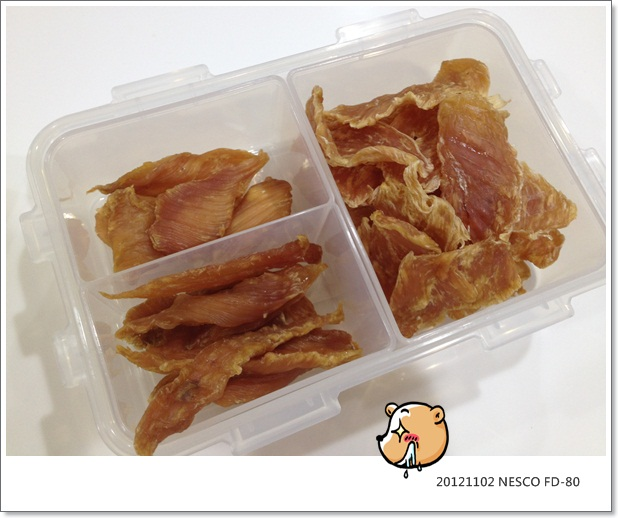
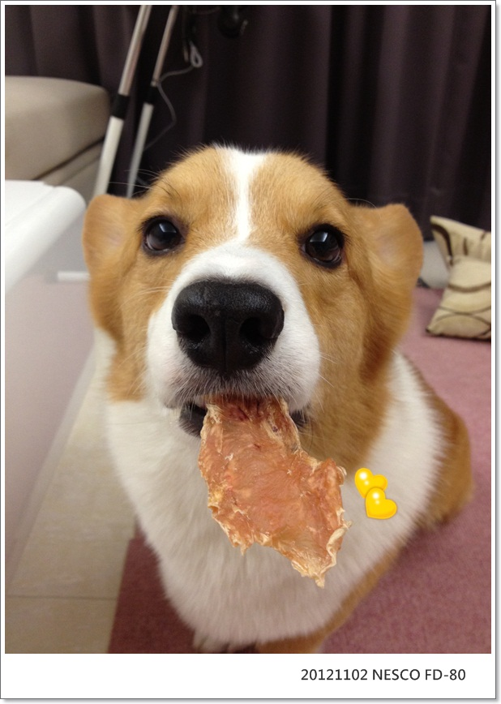

賀！新玩具FD-80飄洋過海兩個月入手
食物乾燥機對養狗的朋友應該不陌生，從有卡卡開始就知這玩意兒
忍了四年才買，我敗家真的是很謹慎又合理(?) 哈
以前住深坑廚房小又亂 (因為我弟是個只會煮不會收的死小孩 )
)
所以根本不太進廚房，更別想說我會自製零食了，很有自知之明 XD

現在脫離我弟又有一個理想中的廚房，所以認真考慮一下決定買了！
我是7月的時候跟代購買的 (下方設有連結)
這團購真的等超久，大概有兩個月吧！利用這兩個月時間我已經爬了超多零食DIY的文章
卡卡很很開心，因為他等著幫紙箱做瘋狂資源回收 XD

簡單開箱，FD-80 原本就附四層烤盤 NT 3500

我又加買了烤盤一組兩個 NT 600
FD-80是方型的烤盤，問了噗友的意見，大家都說方型的比較好擺

又加購 Jumbo Jerky works kit 擠肉槍 NT 800
內附三種擠花嘴，Jerky cure 8包，4種不同口味的調理包各2包

開關就很簡單只有一個溫度設定
這台功率700W,每小時使用度數是0.7度
非夏季用電費用2.1/度，所以一小時花費約1.47元，其實還蠻省電的

首烘當然從最簡單的雞肉乾開始，去COSTCO買了雞胸肉，切塊後再敲扁
剛到貨急著烘，還沒買肉搥，先拿汽泡水的瓶子暫用

我喜歡一次烘滿滿六大盤，我放的沒很密，其實量應該還可以更多

烘了一小時忍不住打開來看，還是生的 (廢話XD)

這次敲的很薄，所以我大概烘了7個小時收工
時間的長短基本上沒有一定，就依實際雞肉乾燥熟成的程度自己做調整嘍！
半夜烘，早上起床收成，媽呀！整間屋子香的不得了！自己邊收成邊偷吃

摩卡卡試吃時間！！這陣子為了吃雞肉乾，指令做的又快又確實
急的時候很愛自己把整套指令自動完成
大概就是老木才剛說: 卡...
這小子已經完成 趴下->躺躺-->拜託-->翻-->傻笑而且眼睛都沒正眼看我，都在看雞肉乾兒 XD

香脆的雞肉乾一部分用樂扣盒分裝起來放冰箱保存
平常要吃的放在夾鏈袋，雞肉薄薄脆脆的很容易掰成小塊狀，拿來當打賞用很適合

六盤的肉，卡卡一個人吃鐵定肥死，分了一些給乾媽帶回家給林爾奇＆大耳吃
看看林爾奇的表情！！大滿足！！

其實平常我本來就很少幫卡卡買外面賣的肉乾肉條類的零食
因為天天刷牙，潔牙骨也不買 (我一直覺得那是吃好玩的，功效不大XD)
最常買的就是跟狗友會團的紐西蘭天然零食&有機餅乾
(後來聽聞紐西蘭零食不會發霉這點後我也不敢買了，不會壞的食物是有點可怕！ )
)
在還沒斷牙之前偶爾還可以吃牛筋圈、牛奶骨這種比較硬的食物，斷牙之後也不敢給了
有機餅乾又愛吃不吃的，之前愛濕鼻子，我買了各式口味給他，現在只有卡內來玩的時候才有銷路惹......Orz

零食種類已經夠少了再扣掉不能吃不愛吃不再買的那些
嗯～他其實很少吃零食 (這就是保持苗條身材的秘訣！！)
有這台天天都有新鮮的零食可以吃，而且雞肉厚一點還有點口感
我自己覺得可以小小彌補卡卡不能吃偏硬食物的小小遺憾啦！哈哈

而且這台做雞肉零食真的太簡單，我從入手已經烘了好幾次
我確定這台應該是不會被我擱在旁邊堆灰塵了，真的是簡單到小朋友都會操作 哈哈哈
又是個相見恨晚的好物!!